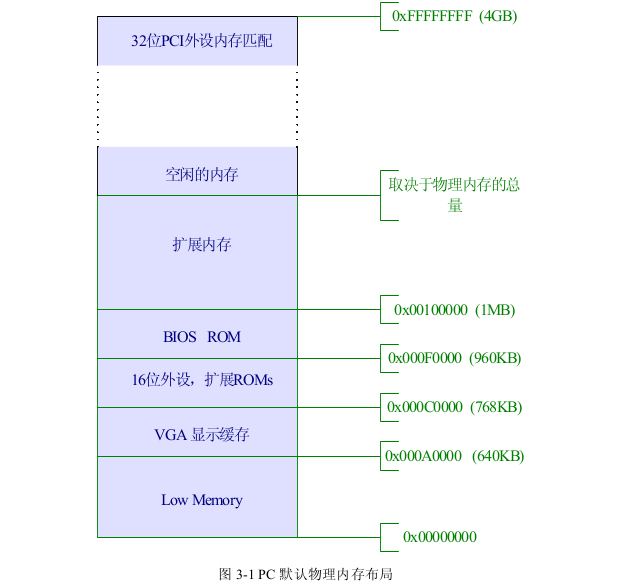
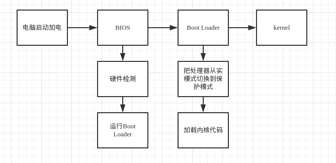

前言
本文基于 ucore 操作系统实验,简要分析操作系统的启动流程.
ucore 操作系统是清华大学用于操作系统教学实验的OS，参考了 MIT 的 JOS，哈佛的 OS161 以及 Linux 系统。我们可以通过这个迷你操作系统在代码层面上理解操作系统的思想。
ucore labs was used as OS Experiments in OS Course Of Dept. of Computer Science & Technology, Tsinghua University. ucore is a teaching OS which is derived from xv6&jos in MIT, OS161 in Harvard and Linux.
物理内存的分布

早期的 PC 是基于 16 位的 Intel 8088 的处理器的,因此只支持 1MB 的物理内存。早期的 PC 的物理内存是从 0x00000000 到 0x000FFFFF,而不是结束于 0xFFFFFFFF。
如图 3-1 所示,物理内存的前 640KB 被标记为了“LowMemory”,这一块内存区域是早期 PC 唯一可以使用的 RAM。事实上,非常早期的 PC 仅仅只能使用 16KB、 32KB 或者 64KB 的 RAM。
从 0x000A0000 到 0x000FFFFF 的 384kB的区域是被硬件保留着用于特殊通途的,比如
像作为 VGA 的显示输出的缓存或者是被当作保存系统固化指令的非易失性存储器。这一部分内存区域中最重要的应该是保存在 0x000F0000 到 0x00100000 处占据 64KB 的基本输入输出系统(BIOS)。在早期的 PC 中,BIOS 是被存储在真正的只读存储器(ROM)中,但然而如今的 PC 将 BIOS 存储在可以更新的闪存中。
BIOS 的作用是对系统进行初始化,比如像激活显卡、检查内存的总量。在进行完这些初始化后,BIOS 便将操作系统位置装载到内存,这些位置可以是软盘、硬盘、CD-ROM 或者是网络,在这之后,BIOS 便会将控制权交给操作系统。
当出现 80286 和 80386 处理器后,Intel 处理器终于打破了仅能访问 1MB 内存空间的限制,这两种处理器分别支持寻址 16MB 和 4GB 的内存空间。尽管如此,PC 架构还是保留了之前的物理内存低 1MB 空间的布局方式,这样做是为了保证和之前存在的软件相兼容,因此最新的 PC 会保留物理内存从 0x000A0000 到 0x00100000 的区域,这样便将系统可以使用的 RAM 分成了两个部分,一部分是低 640KB 的“LowMemory”,另一部分便是 1MB 以上部分的“扩展内存”。另外,32位物理地址空间的最高部分往往被 BIOS 保留供 32 位的 PCI 外设所使用。
如今的 x86 处理器能够支持多于 4GB 的物理内存，于是 RAM 的范围能够扩展到超过
0xFFFFFFFF。在这种情况下,BIOS 需要保留 32 位物理地址空间的最高部分,这是为了将
这个区域留给 32 位外设去匹配内存。在这里,由于设计的局限,ucore 操作系统仅仅会使用 PC 物理内存的前 256MB,所以我们只需考虑 PC 只支持 32 位物理地址空间。
BIOS
在 PC 启动的时候,首先会在实模式下运行 BIOS。
BIOS是英文"Basic Input Output System"的缩略词，直译过来后中文名称就是"基本输入输出系统"。其实，它是一组固化到计算机内主板上一个ROM芯片上的程序，它保存着计算机最重要的基本输入输出的程序、开机后自检程序和系统自启动程序，它可从CMOS中读写系统设置的具体信息。 其主要功能是为计算机提供最底层的、最直接的硬件设置和控制。
在系统刚启动时,BIOS会被加载到物理内存中 0x000F0000 到 0x00100000 的位置处,CS 设置为 0xF000 ,将 IP 设置为 0xFFF0,物理地址为 0x000FFFF0,这样就保证了 BIOS 会在刚启动的时候得到控制权。BIOS 完成自检之后,就会把控制器交给 Boot Loader。
Boot Loader
我们已经知道 BIOS 在完成它的一系列初始化后便把控制权交给 Boot Loader 程序,Boot Loader 程序会在编译成可执行代码后被放在模拟硬盘的第一个扇区。
硬盘由于传统的原因被默认分割成了一个个大小为 512 字节的扇区,而扇区则是硬盘最小的读写单位,即每次对硬盘的读写操作只能够对一个或者多个扇区进行并且操作地址必须是 512 字节对齐的。
如果说操作系统是从磁盘启动的话,则磁盘的第一个扇区就被称作“启动扇区”,因为 Boot Loader 的可执行程序就存放在这个扇区。ucore 实验中,当 BIOS 找到启动的磁盘后,便将 512 字节的启动扇区的内容装载到物理内存的 0x7c00 到 0x7dff 的位置,紧接着再执行一个跳转指令将 CS 设置为 0x0000 ,IP设置为 0x7c00 ,这样便将控制权交给 Boot Loader 程序.
在 ucore 实验中,Boot Loader 由bootasm.S和bootmain.c编译而成.
bootasm.S负责把处理器从实模式切换到保护模式(关于保护模式的相关知识请自行谷歌).然后调用bootmain函数.bootmain.c把内核的可执行代码从硬盘中读取到内存中.这里的可执行代码指的是 ELF 文件.在 ucore 实验中,它从硬盘的第二个扇区开始存储,因为第一个扇区存的是 boot loader。
总结

以上是计算机启动的一般流程,ucore 实验中的 boot loader 是比较简单的,不需要考虑硬盘分区等问题.但是我们从它的启动流程抽象出了一个本质的过程:操作系统的启动关键在于找到它的第一行可执行代码,至于是用什么方式,要视情况而定.
参考资料
华中科技大学32位操作系统实践
ucore_lab